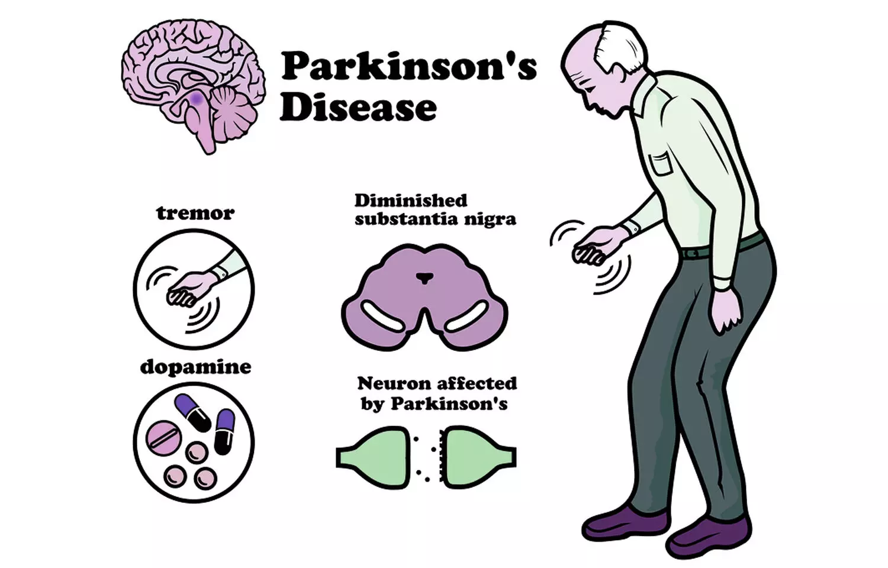

About Me
Hello, I'm Priyanka Gour, a first-year MCA student at the University of Hyderabad. I have a strong foundation in programming languages such as Java, Python, C, C++, and SQL, as well as their associated frameworks.
I have extensive experience working on projects related to web development and machine learning, which has helped me develop a diverse skillset. As an enthusiastic coder, I'm passionate about exploring new technologies and solving complex problems. I'm a quick learner and always ready to take on new challenges.
As a fresher, I'm excited to work in a dynamic and challenging environment where I can learn and grow. With my skills and experience, I'm confident that I can make a meaningful contribution to any team.
Projects
Parkinson's Disease Indentification and Prediction
Parkinson's disease is a neurological disorder that affects millions of people around the world. Early diagnosis and treatment are essential for managing the symptoms and improving the quality of life of those affected by the disease.
In this machine learning project, we aim to identify and predict Parkinson's disease using machine learning algorithms. We will use a dataset of biomedical voice measurements from people with and without Parkinson's disease, and train machine learning models to accurately classify individuals based on their voice features.
We will explore several machine learning algorithms, such as Support Vector Machines, Random Forest, Logistic Regression, Neural Networks, and K-Nearest Neighbors, to identify the best-performing model for Parkinson's disease prediction.
Once we have trained and validated our model, we will deploy it as a web application to make it accessible to anyone who needs it. This project can potentially contribute to early detection and diagnosis of Parkinson's disease, and help improve the quality of life for those affected by the disease.
By showcasing this project on a portfolio website, we can demonstrate our skills in machine learning and data science, as well as our commitment to using technology to make a positive impact on people's lives.
Canteen Management System
The Canteen Management System is a web-based application that aims to streamline and manage the operations of a canteen.
This system provides a platform for the canteen staff to manage and automate the ordering process, inventory management,
payment collection, and generate reports.
The system has several modules that cater to different functionalities such as the menu management module, order
management module, payment module, and report generation module. The menu management module allows the canteen staff to
add, modify or delete items from the menu list. The order management module enables the customers to place their orders
online, while the staff can view and manage the orders from their dashboard.
The payment module allows the customers to pay for their orders online or choose to pay later, and the staff can collect
payments, and manage the payment records. The report generation module generates reports on various aspects such as sales
report, inventory report, payment report, and customer order history, helping the canteen staff to make informed decisions.
Technologies used:
The project will be developed using HTML, CSS, JavaScript, PHP, and MySQL. The project will be hosted on a web server, and
the database will be stored in a MySQL database.
Benefits of the project:
The Canteen Management System aims to provide a seamless experience for the canteen staff and customers. It will eliminate
the manual processes of order taking, payment collection, and report generation, reducing the workload of the canteen staff.
The system will increase the efficiency of the canteen operations, improve the accuracy of the order taking and payment
collection, and provide real-time access to the sales data and inventory status.
Conclusion:
The Canteen Management System is an essential tool for any canteen, cafeteria, or food court, providing a centralized
platform for managing the canteen operations. The project showcases my web development skills and my ability to create
efficient and user-friendly web applications.
Skills
Java
MySQL
Javascript
Python
C++
HTML
CSS
Wordpress
Computer Networking
Data Structures and Algorithms
Operating Systems
Linux
Docker
GIT and GITHUB
Blogging
Certifications
HackerRank Certificate in Problem Solving
The HackerRank certification on problem-solving validates a candidate's proficiency in Java, data structures, and algorithms. This certification test assesses the candidate's ability to solve real-world problems using programming skills and provides recognition for their problem-solving skills.
The test covers essential topics such as arrays, strings, linked lists, trees, and graphs, and their related algorithms. A candidate who successfully passes the HackerRank certification test has demonstrated their understanding of the basics of problem-solving in Java and their proficiency in implementing data structures and algorithms.
This certification is a valuable addition to a my resume and provides me with a competitive edge in the job market.
HackerRank Certificate in SQL (Advanced)
I am proud to share that I have obtained a certificate in SQL (Advanced) from HackerRank Certification. This certification is a testament to my expertise in advanced SQL topics and my dedication to mastering this powerful language.
The test included a range of complex topics, from advanced querying techniques to database management, and passing it required a deep understanding of SQL's capabilities and nuances. As an SQL expert, I am well-equipped to tackle complex data management challenges and provide data-driven insights that drive business success.
I am excited to apply my knowledge and skills to help organizations unlock the full potential of their data.
Data Science with Python
The Simplilearn certification on Data Science with Python is designed to validate a candidate's knowledge and proficiency in using Python for data science.
This certification test assesses the candidate's understanding of essential data science concepts such as data exploration, data cleaning, data visualization, machine learning, and deep learning using Python libraries such as Pandas, NumPy, Matplotlib, Scikit-learn, and Keras. A candidate who successfully passes the Simplilearn certification test has demonstrated their ability to work with large datasets, apply statistical methods, and build machine learning models to solve real-world problems.
This certification is a valuable addition to a my resume and provides me with a competitive edge in the job market for data science and related roles.
Blogs
Data structures and algorithms are the backbones of computer science and programming. They are crucial for writing efficient and optimized code, which is a key requirement in technical interviews and real-world programming projects.
This article aims to help developers avoid these mistakes by identifying the most common ones and providing guidance on how to avoid them. By analyzing real-world examples, the article provides a practical understanding of these mistakes and offers actionable solutions to address them. Overall, this article is a valuable resource for any developer looking to write better OOP code that is more efficient, maintainable, and scalable.